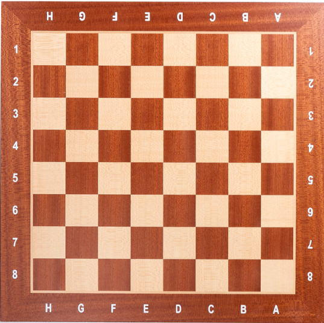

Introduction
Chess is a two-player strategy board game played on a checkered board with 64 squares arranged in an 8x8 grid. Each player begins with 16 pieces: one king, one queen, two rooks, two knights, two bishops, and eight pawns. The objective of the game is to checkmate the opponent's king, which means the king is under attack and cannot escape capture.
Gameplay
Each player takes turns moving their pieces according to specific rules. The pieces move in different ways, and capturing an opponent's piece requires moving a piece onto the square occupied by the opponent's piece. The game ends when a player checkmates the opponent's king, resigns, or the game is drawn due to a stalemate, threefold repetition, or other conditions.
Rules
The Board
- The board consists of 64 squares, arranged in an 8x8 grid.
- The squares are alternately colored black and white.
- The board is positioned so that each player has a white square in the bottom right corner.
The Pieces

- Each player begins with 16 pieces: one king, one queen, two rooks, two knights, two bishops, and eight pawns.
- The pieces move in different ways, and capturing an opponent's piece requires moving a piece onto the square occupied by the opponent's piece.
How the Pieces Move


The king can move one square in any direction.


The queen can move any number of squares diagonally, horizontally, or vertically.


The rook can move any number of squares horizontally or vertically.


The bishop can move any number of squares diagonally.
The knight moves to any of the squares immediately adjacent to it, and then moves two squares in a straight line in any direction.


The pawn can move one or two squares forward on its first move, and one
Material advantage meaning
Material in chess refers to the relative value of the pieces on the board. Each player starts with a set number of pieces, each with a different point value. The values assigned to each piece are: pawn (1), knight (3), bishop (3), rook (5), queen (9), and king (invaluable, since the game is lost if the king is captured). Throughout the game, players try to gain material by capturing their opponent's pieces while protecting their own. Losing a valuable piece, such as a queen or a rook, can put a player at a significant disadvantage. However, material is not always the only factor in determining who is winning the game. Positional factors, such as control of the center, pawn structure, and king safety, can also play a crucial role. Sometimes, sacrificing material can lead to a better position and ultimately to victory. In summary, material in chess is the relative value of the pieces on the board, with each piece having a specific point value. Players aim to gain material by capturing their opponent's pieces while protecting their own, but other factors, such as position and king safety, can also be important in determining the outcome of the game.